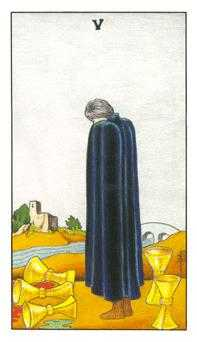
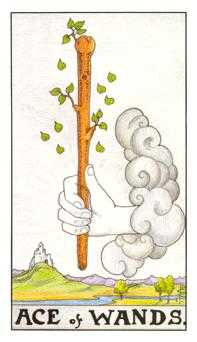
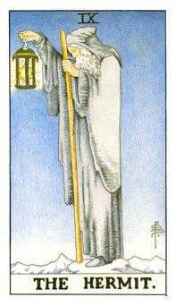
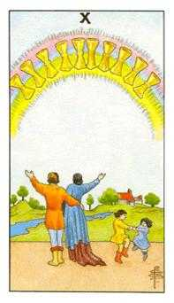

JSC Tarot Fortune Teller
Past

Five of Cups
You have been facing the consequence of a large flow of negative
emotions like rage or hate.
Present

Ace of Wands
You are or should be very focused, and this is going to result in
your desired goal.
Future

The Hermit - Reversed
You might be afraid of something, or unsure about your abilities.
Slow down, relax and assess the situation in order to succeed.
Advice

Ten of Cups
Follow your family or team and everyone should help each other.
General contribution of everyone for a greater and long lasting
good outcome.